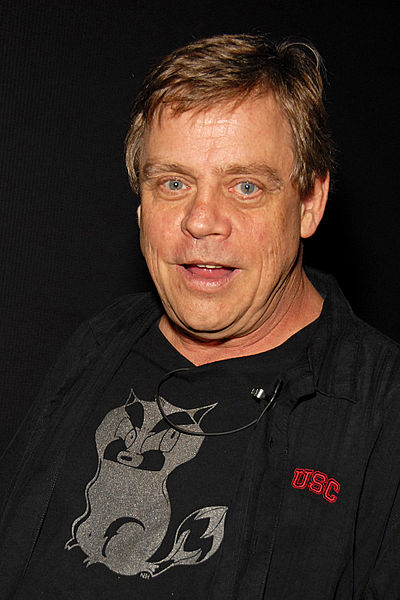

Premise
The series revolves around the daily lives of two 23-year-old friends, a blue jay named Mordecai and a racoon named Rigby. They work at a park as groundskeepers and spend their time avoiding work. [10]This is much to the chagrin of their boss, Benson, an uptight gumball machine. Most of the other coworkers will acompany Mordecai and Rigby on their endeavors.
Creation
The content of Regular Show waslargely based off of creator J. G. Quintel's life and experiences in college. He attended the "California Institute of the Arts", and many of Regular Show's characters are based on the characters developed for films that he made as a student The Naïve Man from Lolliland (2005) and 2 in the AM PM (2006). Both of which originated from a game called "48-hour films", where students pull one word out of a hat at midnight and spent two days brainstorming ideas for a film.
Production
The plot usually starts with a simple problem that the characters must overcome. As they do so, a supernatural or magical element appears and complicates the issue. [4] The writers of the show decided on this narrative structure so they could take advantage of the animation.[4] The series is rated TV-PG-V.[4] Cartoon Network told the creators that they wanted to age up the TV-Y7 they normally did on the network. This comment inspired the crew to use adult humor, so the show includes a lot of innuendos and drug and alcohol references.
